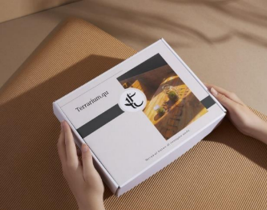
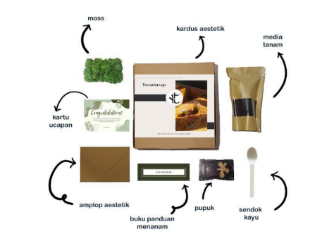
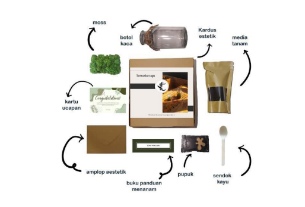
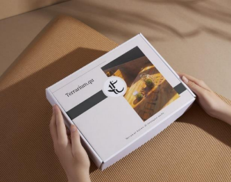
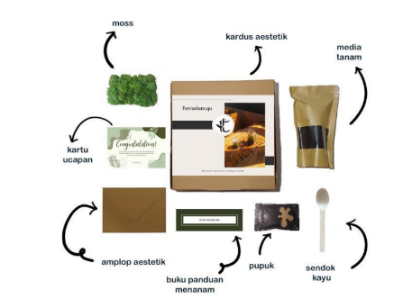
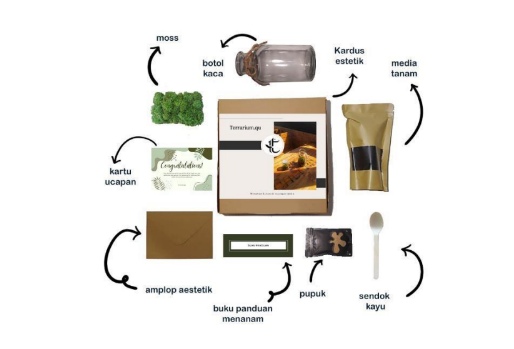
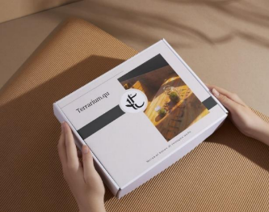
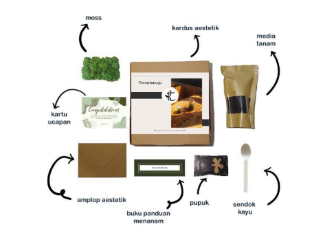
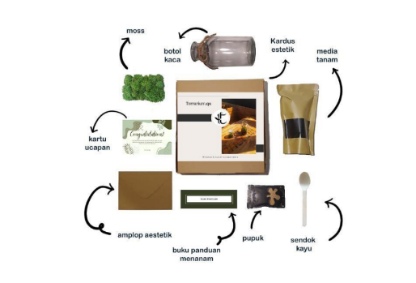
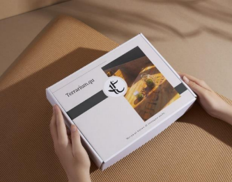
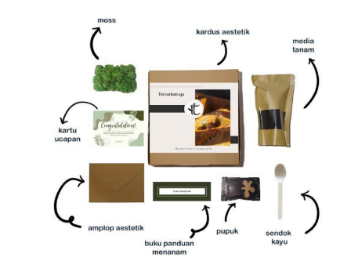
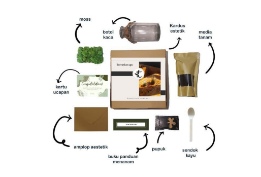
Terrarium.qu
Rp 50.000 IDR
Hadirkan keindahan alam ke dalam rumah Anda dengan terrarium kaca yang menawan ini. Didesain dengan elegan, terrarium ini berbentuk mangkuk kaca terbalik yang menampung berbagai lapisan tanah dan tanaman kecil yang subur. Setiap lapisan tanah disusun dengan teliti untuk menciptakan ekosistem mini yang harmonis dan menawan.
Terrarium ini didukung oleh potongan kayu alami yang unik, memberikan kesan artistik dan alami pada setiap sudut ruangan Anda. Cocok ditempatkan di ruang tamu, meja kerja, atau bahkan sebagai pusat perhatian di meja makan Anda.
Fitur Produk:
Manfaat :
Tambahkan sentuhan alam ke dalam rumah Anda dengan terrarium kaca yang cantik ini, dan nikmati keindahan tanaman tanpa repot!